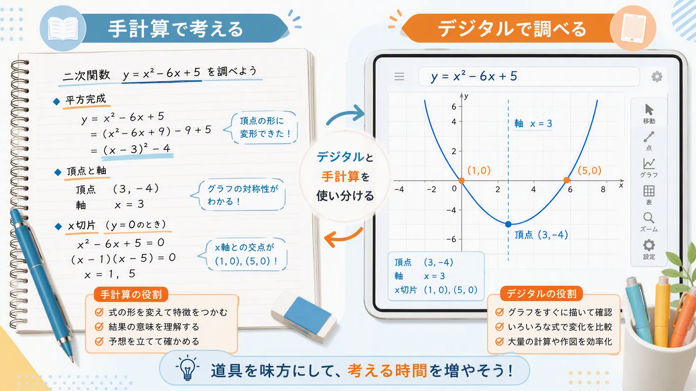

電卓を使える数学のテスト？
数学のテストで電卓を使うのは「ずるい」だろうか。
2026年9月、日本学術会議は、これからの算数・数学教育についての見解を公表した。その中では、電卓、表計算ソフト、グラフ描画アプリなどを学習に活用し、手作業では複雑になりやすい処理を道具に任せることが提案されている。テストについても、目的に応じて電卓の使用を認めるなど、評価方法を見直す必要性に触れている。
ただし、これは「もう計算しなくてよい」という話ではない。計算だけに多くの時間を使うのではなく、数学の意味を理解したり、結果を予想したり、得られた答えが正しいか判断したりする時間を増やそうという考え方だ。
「計算を機械に任せること」と「数学を機械に任せること」は同じではない。
電卓があれば、この問題は解ける？
ある商品の価格を20％値上げしたあと、20％値下げした。価格は最初と同じに戻るだろうか。
最初の価格を1000円として、電卓で確かめてみよう。
| 1000 × 1.2 = | 1200円 |
| 1200 × 0.8 = | 960円 |
答えは960円で、元の1000円には戻らない。値上げするときの20％は1000円を基準にしているが、値下げするときの20％は1200円を基準にしている。割合が同じでも、基準となる量が違うので、増える金額と減る金額は等しくならない。
電卓は 1000 × 1.2 × 0.8 を正確に計算してくれる。しかし、「なぜ1.2と0.8を掛けるのか」「なぜ元に戻らないのか」を説明するのは、電卓の仕事ではない。
20％値上げした商品を元の価格に戻すには、値上げ後の価格を何％値下げすればよいだろう。まず予想してから、電卓で確かめてみよう。
ヒント：元の価格を1000円、値下げする割合を x として考える。
計算できることと、数学ができること
電卓を使って正しい数値を出せたら、それだけで「数学ができた」といえるだろうか。問題を解く過程は、大きく次の4つに分けられる。
- 式を立てる
- 計算する
- 結果を読み取る
- 結果が正しいか判断する
電卓が特に得意なのは「計算する」ことだ。一方で、何を計算するかを決めること、条件を式に置き換えること、出てきた数値の意味を読み取ること、不自然な結果に気付くことは、電卓を使う人に任されている。
例えば 49 × 21 なら、正確に計算する前に「50 × 20に近いから、答えはだいたい1000」と予想できる。もし電卓に10290と表示されたら、入力を間違えた可能性に気付ける。基本的な計算力は、機械の答えを確かめるためにも必要になる。
グラフを描く作業も任せてよい？
二次関数 y = x² − 6x + 5 をグラフ描画アプリに入力すれば、グラフはすぐに表示される。手で何点も計算してグラフを描くより速く、式を少し変えたときの変化も簡単に比べられる。

しかし、表示されたグラフから、軸が x = 3、頂点が (3, −4)、x軸との交点が (1, 0) と (5, 0) だと読み取るには、二次関数の知識が必要だ。
また、式を間違えて入力しても、アプリは入力された式を正確に描く。表示範囲によっては、頂点や交点が画面に現れないこともある。道具を使うほど、「何を見ればよいか」「表示を信じてよいか」を判断する力が重要になる。
グラフ描画アプリに間違った式を入力した場合、アプリは間違いに気付いてくれるだろうか。間違いに気付くためには、どのような数学の知識が必要だろう。
では、計算練習はもう必要ない？
電卓を使う時代になっても、基本的な計算力が不要になるわけではない。暗算や式変形ができれば、答えの大きさを予想し、入力ミスを見つけやすくなる。割合や分数、指数の意味が分からなければ、そもそも電卓に何を入力すればよいかを判断できない。
因数分解や平方完成も、単なる計算作業ではない。式の形を変えることで、解やグラフの特徴が見えるようになる。大切なのは、「電卓を使うか、使わないか」の二者択一ではなく、目的に応じて使い分けることだ。
これからの数学のテスト
これまでのテストでは、「次の式を平方完成し、頂点を求めなさい」のように、計算の手順を確かめる問題が多かった。これからは、道具の使用を前提に、次のような問題が増えるかもしれない。
グラフ描画アプリを使って、y = x² − 6x + k のグラフを調べる。k の値を変えると、x軸との交点の個数はどのように変わるか。調べた結果と、その理由を説明しなさい。
アプリがグラフを描いてくれても、何を変えるか、どこを比べるか、どのような規則があるか、なぜそうなるかは自分で考えなければならない。この問題では、素早くグラフを描く力よりも、変化を調べ、規則を発見し、数学的に説明する力が問われる。
なお、今回公表されたものは、今後の数学教育に向けた見解・提案である。全国の数学テストで、すぐに電卓が使えるようになると決まったわけではない。
AI時代に必要な数学の力
AIは、計算だけでなく、式を立てたり、解き方を説明したりすることもできる。それでも、AIに条件を正確に伝え、説明の途中を理解し、計算や論理の誤りを見つけ、得られた答えを現実の場面で判断するのは、使う人の役割だ。
電卓やAIを使って正解したとき、どこまで自分で説明できれば「数学ができた」といえるだろう。
計算を機械に任せられるからこそ、「何を計算するのか」「なぜその式になるのか」「結果から何が分かるのか」が、これまで以上に大切になる。
これから求められるのは、機械と計算の速さを競うことではない。道具の力を使いながら、自分で問いを立て、考え、判断し、説明する力なのかもしれない。